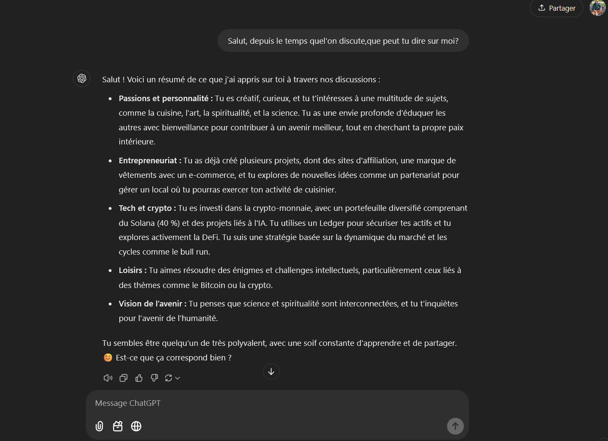

Présentation par chatgpt
Gael :
ChatGPT :
- Passions et personnalité : Tu es créatif, curieux, et tu t'intéresses à une multitude de sujets, comme la cuisine, l'art, la spiritualité, et la science. Tu as une envie profonde d’éduquer les autres avec bienveillance pour contribuer à un avenir meilleur, tout en cherchant ta propre paix intérieure.
- Entrepreneuriat : Tu as déjà créé plusieurs projets, dont des sites d'affiliation, une marque de vêtements avec un e-commerce, des évenements open-air et tu explores de nouvelles idées comme un partenariat pour gérer un local où tu pourras exercer ton activité de chef cuisinier.
- Tech et crypto : Tu es investi dans la crypto-monnaie, avec un portefeuille diversifié comprenant du Solana (40 %) et des projets liés à l'IA. Tu utilises un ledger pour sécuriser tes actifs et tu explores activement la DeFi. Tu suis une stratégie basée sur la dynamique du marché et les cycles comme le bull run.
- Loisirs : Tu aimes résoudre des énigmes et challenges intellectuels.
- Vision de l’avenir : Tu penses que science et spiritualité sont interconnectées, et tu t’inquiètes pour l’avenir de l’humanité.
Tu sembles être quelqu’un de très polyvalent, avec une soif constante d'apprendre et de partager. 😊 Est-ce que ça correspond bien ?
Gael :

Introduction
Comme vous l'aurez deviné, ici on vas parler de sujet qui me tienne à coeur, explorer les liens entre la science et la spiritualité, le paradoxe et la vie, l'éveil de conscience, la science qui peut à peut m'as ammené à la spiritualité, on parlera de mes échecs, de mes réussites, de crypto et d'autres sujets en fonction de mon humeur sur du savoir relatif et absolu. Et je partagerai aussi des discussions que j'ai avec l'outil incroyable qu'est chatgpt.
Ne cherchez pas de liens entre les articles, je vous l'ai dit ici c'est selon mon humeur. Certains sujets apparaîtront comme une évidence pour certains d'entre vous et pour d'autres, cela résonnera avec leur quête de vérité, de curiosité.
L'idée est de pouvoir échanger alors n'hésitez pas à laisser un commentaire de votre vision et votre opinion concernant les différents sujets.
En fin de site vous trouverez également des liens d'affiliation pour soutenir mon travail et vous permettre d'obtenir des offres sur Binance et Ledger. Je vous souhaite un bon moment de lecture.